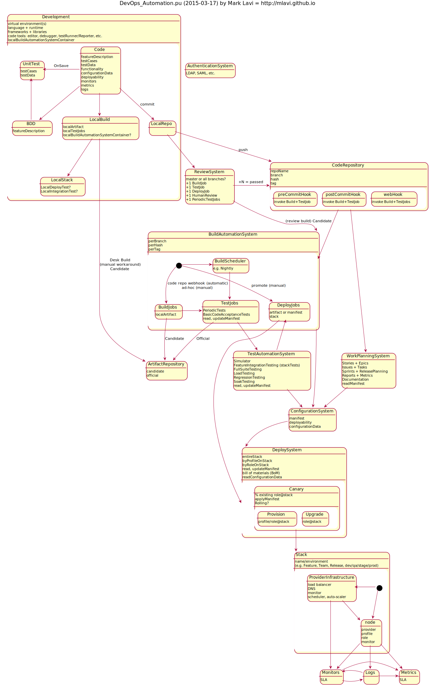

Today's DevOps Automation Diagram
11/Mar 2015
#shipit and #failfast: I want to share and discuss the DevOps Automation Diagram for continuous deployment. Via open source and this blog, we can elevate the state of our software engineering and service design!
Quotes and Motivation
- “Perfect is the enemy of good.” –Volare (paraphrased)
- “Fail fast.” –Ward Cunningham (paraphrased as #failfast)
- “I hope to replace myself with a tiny shell script one day.” –Unknown Internet meme?
Ship it and fail fast: I would love to get feedback! I also wonder if anyone can improve my quote attributions.
Here is today’s snapshot of the entire DevOps Automation Diagram source and image. I’ve omitted many possible connections for the sake of showing the optimal automated progression from a developer’s mind to the production stack. I’ve refactored terminology to help inform systems and actions, but you can see there are many moving pieces to enable modern day software development life cycle automation, some of which are not easily identified off the shelf.
You can “view the SVG image” in a new browser window or tab and scale it to your liking and then cut and paste text from it.
Updated!
My original release was 2015-03-11 (source below), but today’s update adds detail, removes many crossed lines for simple visual flow parsing, and is organized vertically.

Source code: devops_automation.pu @startuml title DevOps Automation (2015-03-11) by Mark Lavi state Development { Development: language Development: editor Development: code tools Development: virtual environment Development: runtime Development: frameworks Development: libraries BDD --> UnitTest BDD: featureDescription Code: featureDescription Code: testCases Code: testData Code: functionality Code: configurationData Code: deployability Code: monitors Code: metrics Code: logs Code -> UnitTest : OnSave Code --> BDD Code --> LocalBuild Code --> LocalRepo : commit UnitTest --> LocalRepo UnitTest: testCases UnitTest: testData LocalBuild --> LocalStack LocalBuild: localArtifact LocalBuild: localTestJobs LocalBuild: localBuildAutomationSystemContainer? LocalBuild -> ArtifactRepository : manual process\nDesk Build\ncandidate LocalRepo -> ReviewSystem LocalRepo -> CodeRepository : push LocalStack: LocalDeployTest? LocalStack: LocalIntegrationTest? } state CodeRepository { CodeRepository : branch CodeRepository : hash CodeRepository : tag preCommitHook -> BuildAutomationSystem preCommitHook: see Build,TestJobs postCommitHook -> BuildAutomationSystem postCommitHook: see Build,TestJobs webHook: see Build,TestJobs } state ReviewSystem { ReviewSystem: master or all branches? ReviewSystem -> BuildAutomationSystem: candidate ReviewSystem -> CodeRepository : +N = passed ReviewSystem: +1 BuildJob ReviewSystem: +1 TestJob ReviewSystem: +1 DeployJob ReviewSystem: +1 HumanReview ReviewSystem: +1 PeriodicTestJobs } state BuildAutomationSystem { BuildAutomationSystem: perBranch BuildAutomationSystem: perHash BuildAutomationSystem: perTag [*] -> BuildScheduler [*] --> BuildJobs: ad-hoc (manual) [*] --> DeployJobs: promote BuildJobs -> TestJobs BuildJobs -> ArtifactRepository: Candidate BuildJobs: localArtifact TestJobs --> ConfigurationSystem : updateManifest TestJobs -> ArtifactRepository: Official TestJobs -> TestAutomationSystem TestJobs: PeriodicTests TestJobs: BasicCodeAcceptanceTests DeployJobs -up-> DeploySystem DeployJobs: artifact DeployJobs: manifest DeployJobs: stack DeployJobs -> ConfigurationSystem: updateManifest BuildScheduler --> TestJobs BuildScheduler: e.g. Nightly } state TestAutomationSystem { TestAutomationSystem -> DeployJobs TestAutomationSystem: Simulator TestAutomationSystem: FeatureIntegrationTesting TestAutomationSystem: FullSuiteTesting TestAutomationSystem: LoadTesting TestAutomationSystem: RegressionTesting TestAutomationSystem: SoakTesting TestAutomationSystem -> ConfigurationSystem: updateManifest } state ArtifactRepository { ArtifactRepository: candidate ArtifactRepository: official } state ConfigurationSystem { ConfigurationSystem: manifest ConfigurationSystem: deployability ConfigurationSystem: configurationData } state Monitors { Monitors: SLA Monitors -> Metrics Monitors -> Logs } state Logs { Logs -> Metrics Logs -> Monitors } state Metrics { Metrics: SLA } state AuthenticationSystem { AuthenticationSystem: LDAP, SAML, etc. } state DeploySystem { DeploySystem -> ConfigurationSystem DeploySystem: entireStack DeploySystem: byProfileOnStack DeploySystem: byRoleOnStack DeploySystem: read, updateManifest DeploySystem: bill of materials (BoM) DeploySystem: readConfigurationData Provision -> Stack Provision: profile/role@stack Provision: applyManifest Upgrade -> Stack Upgrade: role@stack Upgrade: applyManifest Canary -> Stack Canary: % existing role@stack Canary: applyManifest } state Stack { Stack: name/environment\n(e.g. Feature, Team, Release, dev/qa/stage/prod) [*] --> node [*] -> ProviderInfrastructure ProviderInfrastructure: load balancer ProviderInfrastructure: DNS ProviderInfrastructure: monitor ProviderInfrastructure: scheduler, autoscaler ProviderInfrastructure --> Monitors ProviderInfrastructure --> node node: provider node: profile node: role node: monitor node -> Monitors node -> Logs node -> Metrics } @enduml
I will put this under revision control in the Infrastructure as Code project I’m undertaking. I do not believe authored hyperlinks export to SVG yet, perhaps that will be my first request for PlantUML.